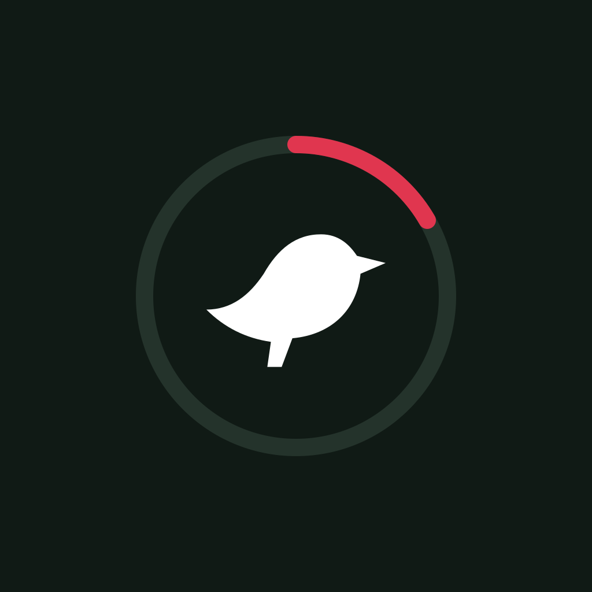

The map's teardrop pin carrying the bird, on the sheet's soft green.
The hero card's teal gradient; red dot = "a rare one's out".
Dark ink, bird in a spotting-scope ring; red arc in the Exceptional color.

Style 1's pin, turned white with a teal bird, on style 2's gradient.
Keeps the green pin (white outline) on the teal gradient.